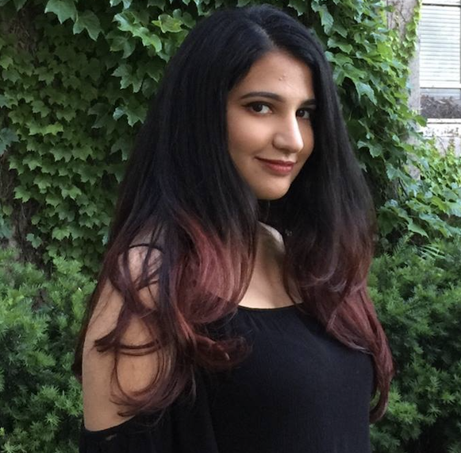
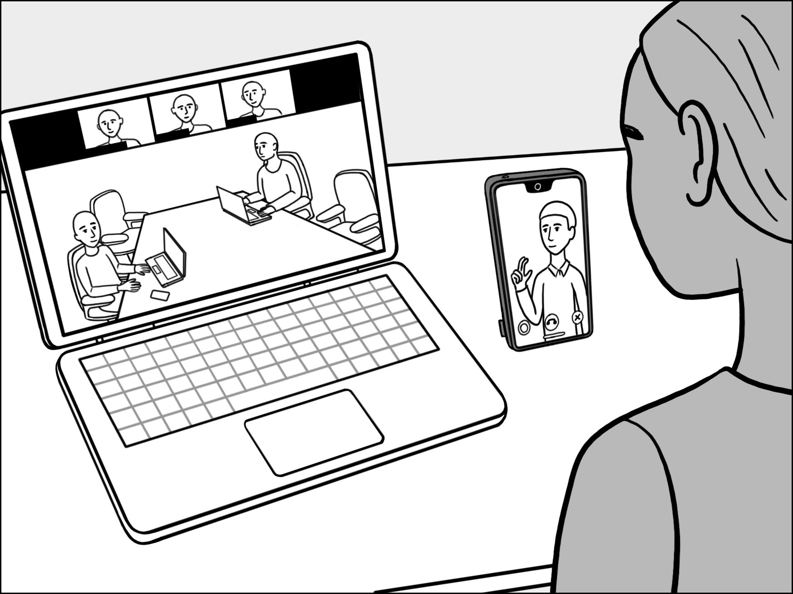
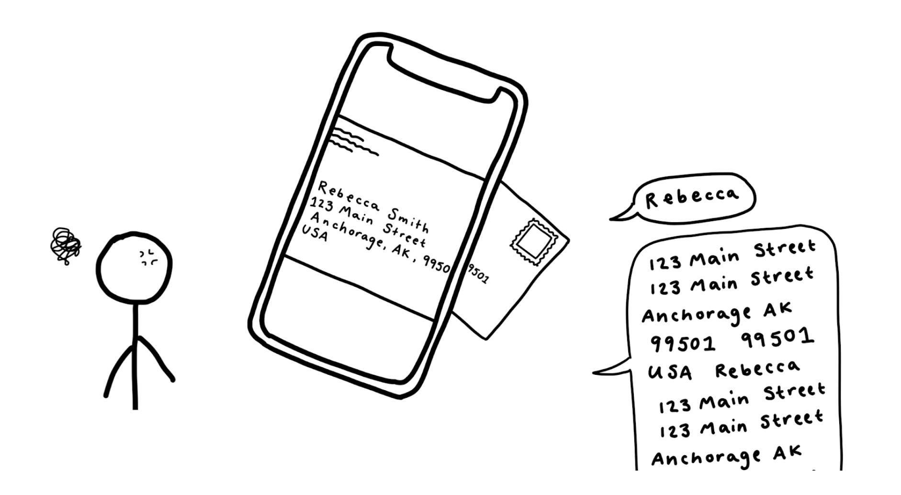

|
Rahaf Alharbi
I am a Ph.D. candidate in the School of Information at the University of Michigan where I am advised by Dr. Robin Brewer and Dr. Sarita Schoenebeck. I work towards a future where disabled people have agency and control over their data. Specifically, I study the privacy implications of visual assistive technologies and I take community-centered approaches with Blind people to prevent and subvert privacy harms.
My work draws from disability studies to understand and resolve the harms of AI-enabled privacy techniques in various stages of AI development (i.e., from problem formulation, dataset creation, to end-user interaction). Through in-depth qualitative research with Blind communities, I argue that while such ‘state-of-art’ visual privacy approaches offer increased autonomy, they also raise significant concerns related to cultural representation (e.g., will these systems to be inclusive of the privacy needs of Blind people all over the world?) and trust (e.g., how would Blind people people confirm the accuracy of outputs by computer vision models?). In future work, I’m researchering how to address such tradeoffs through co-desgin workshops with Blind people.
I interned at Microsoft Research with the Ability team and at Meta with the Responsible AI team. Prior to graduate school, I obtained my Bachelor of Science degree in Mechanical Engineering (minor in Ethnic Studies) at the University of California, San Diego.
Email /
CV /
Google Scholar /
Twitter
|

|
Upcoming travel
-
Jun. 2024: Selected to attend HCIC as UMich representative. Super excited to meet and chat with old and new friends!
Updates
-
Mar. 2024: I won the Rackham Predoctoral Fellowship which aims to support dissertations that are "unusually creative, ambitious and impactful."
-
Aug. 2023: Our privacy and accessibility workshop was accepted to ASSETS 2023!
-
May 2023: Started my internship at Meta in the Responsible AI team! I am excited to be back in California!
-
Mar. 2023: Excited to present our paper “Accessibility Barriers, Conflicts, and Repairs: Understanding the Experience of Professionals with Disabilities in Hybrid Meetings” at CHI 2023 in Hamburg, Germany.
-
Dec. 2022: I passed my prelim defense! I’m now a Ph.D. candidate!
-
May 2022: I started my internship at Microsoft Research in the Ability team!
-
Apr. 2022: My first first-author paper was accepted to CSCW 2022! Excited to present my study on the benefits and harms that Blind people perceive of future privacy technology (obfuscation).
-
Nov. 2022: I passed my pre-candidacy defense!
Journal and Conference Publications

Accessibility Barriers, Conflicts, and Repairs: Understanding the Experience of Professionals with Disabilities in Hybrid Meetings
Rahaf Alharbi, John Tang, Karl Henderson
CHI 2023
PDF /
ACM DL /
Talk
We interviewed 21 professionals with disabilities to unpack the accessibility dimensions of hybrid meetings. Our analysis demonstrates how invisible and visible access labor may support or undermine accessibility in hybrid meetings. We offer practical suggestions and design directions to make hybrid meetings accessible.

Hacking, Switching, Combining: Understanding and Supporting DIY Assistive Technology Design by Blind People
Jaylin Herskovitz, Andi Xu, Rahaf Alharbi, Anhong Guo
CHI 2023
PDF /
ACM DL /
Talk /
Dataset
Current assistive technologies (AT) often fail to support the unique needs of Blind people, so they often become domain experts, 'hack' and create Do-it-Yourself (DIY) AT to creatively suit their need. To further understand and support DIY AT, we conducted two-stage interviews and diary study with 12 Blind participants and we present design considerations for future DIY technology systems to support existing customization and ‘hacking’ behaviors Blind people develop.
Definition Drives Design: Disability Models and Mechanisms of Bias in AI Technologies
Denis Newman-Griffis, Jessica Sage Rauchberg, Rahaf Alharbi, Louise Hickman, Harry Hochheiser
First Monday
PDF /
First Monday DL
We reveal how AI bias stems from various design choices, including problem definition, data selection, technology use, and operational elements, alongside core algorithms. We show that differing disability definitions drive distinct design decisions and AI biases. Lack of transparency and disabled involvement exacerbate these issues. Our analysis offers a framework for scrutinizing AI in decision-making and promotes disability-led design for equitable AI in disability contexts.
Understanding Emerging Obfuscation Technologies in Visual Description Services for Blind and Low Vision People
Rahaf Alharbi, Robin N. Brewer, Sarita Schoenebeck
CSCW 2022
PDF /
ACM DL /
Talk
Machine learning approaches such as obfuscation are often thought of as the state-of-art solution to addressing visual privacy concerns. We interviewd 20 Blind and low vision people to understand their perspectives on obfuscation. We found that while obfuscation may be benefical, it imposes significant trust and accessibility issues. Participants worried that cultural or gendered privacy needs might be overlooked in obfuscation systems. We applied the framework of interdependence to rethink current obfuscation approaches, and provided more inclusive design directions.
Women's Perspectives on Harm and Justice after Online Harassment
Jane Im, Sarita Schoenebeck, Marilyn Iriarte, Gabriel Grill, Daricia Wilkinson, Amna Batool, Rahaf Alharbi, Audrey N. Funwie, Tergel Gankhuu, Eric Gilbert, Mustafa Naseem
CSCW 2022
PDF
We conducted a survey in 14 geographic regions around the world (N = 3,993) to understand women’s perceptions of harm associated with online harassment and preferred platform responses to that harm. Results show that, on average, women perceive greater harm associated with online harassment than men, especially for non-consensual image sharing.
|
{kind=link}